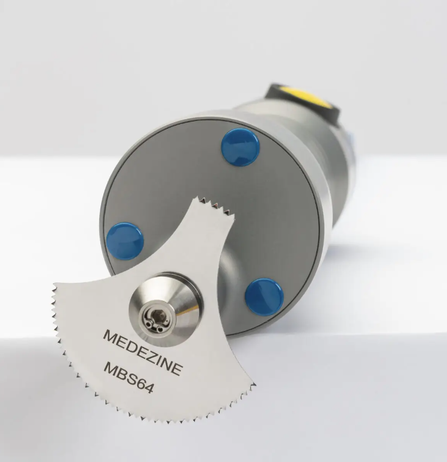
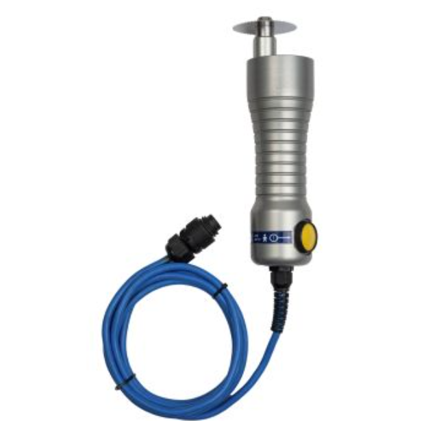
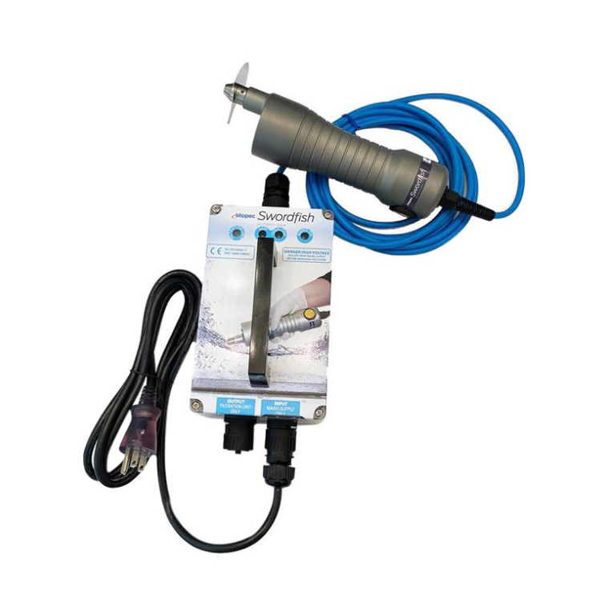
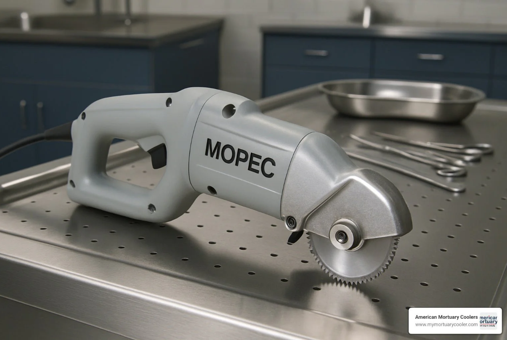
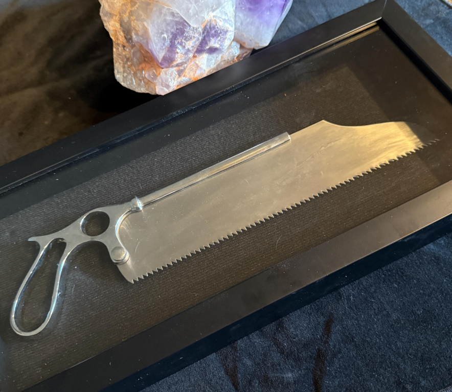

Introduction
A medical autopsy is a detailed examination of a person's body after they have died. It helps doctors and scientists find out the exact cause of death, whether from illness, injury, or other reasons. Autopsies are very useful for forensic pathologists because they can provide important evidence in criminal cases. They also help improve medical knowledge by learning more about diseases and how they affect the body. Autopsies are an important tool for understanding death, ensuring justice, and improving healthcare.
Part A: Existing Technology






Autopsy Saw
- Made in the 1800s, electric versions around 1900.
- Used to cut bones during autopsies.
- Enables precise and safe cutting of skulls and bones.
- Helped forensic doctors open bodies more easily than manual tools.
1920s: Modern Ventilators ("Iron Lung")

Ventilator
- Early devices like the "iron lung" appeared in the 1920s.
- Help patients breathe.
- Saved many lives during polio outbreaks; still used today.
- Used in research or post-mortem respiratory studies.
Late 20th Century: Imaging & Forensics

Virtual Autopsy (CT scans)
- Popular since late 1990s.
- Uses CT imaging for inside views without cutting.
- Fast, less invasive, highly accurate for cause of death.
- Allows detailed internal examination remotely.
Digital Forensics (Autopsy Software)

Autopsy Software
- Started around 2000.
- Analyzes digital evidence from devices.
- Quickly uncovers clues from phones/computers.
- Supports forensic investigations.
Part B: Future Technology
Memory Scanner Device
- Reads last memories before death.
- Helps determine cause faster.
- Like a USB for memories.
Memory Scanner Device
- Reads memories.
- Helps identify cause of death.
- Fast and precise.
AR Glasses for Autopsy
- Show inside the body in real-time.
- Zoom on organs/tissues.
- Make autopsies faster and more accurate.
AR Glasses
- Show inside the body.
- Zoom on tissues.
- Speed up autopsies.